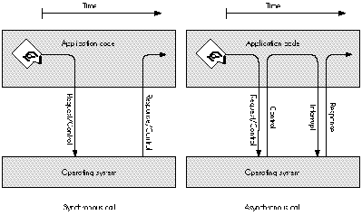
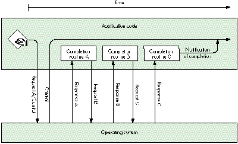

The Macintosh has always supported asynchronous calls to many parts of its operating
system. This article expands on the information found in Inside Macintosh by telling
when, why, and how you should use functions asynchronously on the Macintosh. It
includes debugging hints and solutions to problems commonly encountered when
asynchronous calls are used.
When calling a routine synchronously, your program passes control to the routine and
doesn't continue execution until the routine's work has completed (either successfully
or unsuccessfully). This would be like giving someone a task and then watching them
perform that task. Although the task is eventually completed, you don't get anything
done while you watch.
On the other hand, when calling a routine asynchronously, your program passes
control to the routine, and the program's request is placed in a queue or, if the queue is
empty, executed immediately; in either case, control returns to the program very
quickly, even if the request can't be executed until later. The system processes any
queued requests while your program is free to continue execution, then interrupts you
later when the request is completed. This is like giving someone a task and going back
to your work while they finish the task. In most cases, it results in more work being
accomplished during the same period of time. Figure 1 illustrates the difference
between synchronous and asynchronous calls.
One situation in which you shouldn't use synchronous calls is when you don't know
how long it may take for the operation to complete, as with the PPC Toolbox's
PPCInform function, for example. PPCInform won't complete until another program
attempts to start a session with your program. This could happen immediately, but
the chances are far greater that it won't. If PPCInform is called synchronously, it
appears that the system has locked up because the user won't get control back until the
call completes. If you call PPCInform asynchronously, it doesn't matter if the function
doesn't complete for minutes, hours, or even days -- your program (and the rest of
the system) can continue normally.

Figure 1How Synchronous and Asynchronous Calls Work
You should also avoid synchronous calls when you can't know the state of the service
you've asked for. Program code that's part of a completion routine, VBL task, Time
Manager task, Deferred Task Manager task, or interrupt handler is executed at what's
commonly calledinterrupt time. Synchronous calls made at interrupt time often result
in deadlock. (See "Deadlock.") An asynchronous call can solve the problem: if the
service you call is busy handling another request, your asynchronous request is
queued and your program code can give up control (that is, the completion routine or
task your code is part of can end), letting the service complete the current request and
eventually process your request.
Routines called synchronously are allowed to move memory, while routines called
asynchronously purposely avoid moving memory so that they can be called at interrupt
time. For example, the File Manager's PBHOpen routine may move memory when
called synchronously, but won't when called asynchronously. If your code is executing
in an environment where memory can't be moved (for example, at interrupt time),
you must call routines asynchronously to ensure that they don't move memory.
At this time, the various lists inInside Macintoshof "Routines That May Move or Purge
Memory," "Routines and Their Memory Behavior," and "Routines That Should Not Be
Called From Within an Interrupt" are either incomplete or incorrect and can't be
trusted entirely. The reasons why a system routine can't be called at interrupt time
include: the routine may move memory; the routine may cause a deadlock condition; the
routine is not reentrant. This article shows how to postpone most system calls until a
safe time. You're encouraged to call as few system routines at interrupt time as
possible.
The routines discussed in this article are low-level calls to the File Manager, the
Device Manager (including AppleTalk driver, Serial Driver, and disk driver calls),
and the PPC Toolbox. All these routines take the following form:
FUNCTION SomeFunction (pbPtr: aParamBlockPtr; async: BOOLEAN): OSErr;
Routines of this form are executed synchronously when async = FALSE or
asynchronously when async = TRUE.
DETERMINING ASYNCHRONOUS CALL COMPLETIONYour program can use two
methods to determine when an asynchronous call has completed: periodically poll for
completion (check the ioResult field of the parameter block passed to the function) or
use a completion routine. Both methods enable your program to continue with other
operations while waiting for an asynchronous call to complete.
POLLING FOR COMPLETIONPolling for completion is a simple method to use when
you have only one or two asynchronous calls outstanding at a time. It's like giving
someone a task and calling them periodically to see if they've completed it. When your
program fills in the parameter block to pass to the function, it sets the ioCompletion
field to NIL, indicating that there's no completion routine. Then, after calling the
function asynchronously, your program only needs to poll the value of the ioResult
field of the parameter block passed to the function and wait for it to change:
Polling is usually straightforward and simple to implement, which makes the code
used to implement polling easy to debug. The following code shows an asynchronous
PPCInform call and how to poll for its completion:
PROCEDURE MyPPCInform;
VAR
err: OSErr;{ Error conditions are ignored in this procedure }
{ because they are caught in PollForCompletion. }
BEGIN
gPPCParamBlock.informParam.ioCompletion := NIL;
gPPCParamBlock.informParam.portRefNum := gPortRefNum;
gPPCParamBlock.informParam.autoAccept := TRUE;
gPPCParamBlock.informParam.portName := @gPPCPort;
gPPCParamBlock.informParam.locationName := @gLocationName;
gPPCParamBlock.informParam.userName := @gUserName;
err := PPCInform(PPCInformPBPtr(@gPPCParamBlock), TRUE);
END;
In this code, MyPPCInform calls the PPCInform function asynchronously with no
completion routine (ioCompletion is NIL). The program can then continue to do other
things while periodically calling the PollForCompletion procedure to find out when the
asynchronous call completes.
PROCEDURE PollForCompletion;
BEGIN
IF gPPCParamBlock.informParam.ioResult <= noErr THEN
BEGIN { The call has completed. }
IF gPPCParamBlock.informParam.ioResult = noErr THEN
BEGIN
{ The call completed successfully. }
END
ELSE
BEGIN
{ The call failed, handle the error. }
END;
END;
END;
PollForCompletion checks the value of the ioResult field to find out whether
PPCInform has completed. If the call has completed, PollForCompletion checks for an
arror condition and then performs an appropriate action.
There are three important things to note in this example of polling for completion:
One drawback to polling for completion is latency. When the asynchronous routine
completes its job, your program won't know it until the next time you poll. This can be
wasted time. For example, assume you give someone a task and ask them if they're done
(poll) only once a day: if they finish the task after an hour, you won't find out they've
completed the task until 23 hours later (a 23-hour latency). To avoid latency, use
completion routines instead of polling ioResult to find out when a routine completes.
USING COMPLETION ROUTINES
Making an asynchronous call with a completion routine is only slightly more complex
than polling for completion. A completion routine is a procedure that's called as soon as
the asynchronous function completes its task. When your program fills in the
parameter block to pass to the function, it sets the ioCompletion field to point to the
completion routine. Then, after calling the function asynchronously, your program can
continue. When the function completes, the system interrupts the program that's
running and the completion routine is executed. (There are some special things you
need to know about function results to use this model; see "Function Results and
Function Completion.")
Since the completion routine is executed as soon as the function's task is complete,
your program finds out about completion immediately and can start processing the
results of the function. Using a completion routine is like giving someone a task and
then asking them to call you as soon as they've completed it.
Because a completion routine may be called at interrupt time, it can't assume things
that most application code can. When a completion routine for an asynchronous
function gets control, the system is in the following state:
Since completion routines execute at interrupt time, they must follow these rules:
PPC Toolbox completion routines. The PPC Toolbox simplifies the job of writing
completion routines. When a PPC Toolbox function is called asynchronously, the
current value of register A5 is stored. When the completion routine for that call is
executed by the PPC Toolbox, the stored A5 value is restored and the parameter block
pointer used to make the call is passed as the input parameter to the completion
routine.
A completion routine called by the PPC Toolbox has this format in Pascal:
PROCEDURE MyCompletionRoutine (pbPtr: PPCParamBlockPtr);
PPC Toolbox completion routines are still called at interrupt time and so must follow
the rules of execution at interrupt time.
The following code shows an asynchronous PPCInform call and its completion routine.
PROCEDURE InformComplete (pbPtr: PPCParamBlockPtr);
BEGIN
IF pbPtr^.informParam.ioResult = noErr THEN
BEGIN
{ The PPCInform call completed successfully. }
END
ELSE
BEGIN
{ The PPCInform call failed; handle the error. }
END;
END;
PROCEDURE DoPPCInform;
VAR
err: OSErr;{ Error conditions are ignored in this procedure }
{ because they are caught in InformComplete. }
BEGIN
gPPCParamBlock.informParam.ioCompletion := @InformComplete;
gPPCParamBlock.informParam.portRefNum := gPortRefNum;
gPPCParamBlock.informParam.autoAccept := TRUE;
gPPCParamBlock.informParam.portName := @gPPCPort;
gPPCParamBlock.informParam.locationName := @gLocationName;
gPPCParamBlock.informParam.userName := @gUserName;
err := PPCInform(PPCInformPBPtr(@gPPCParamBlock), TRUE);
END;
In this code, DoPPCInform calls PPCInform asynchronously with a completion routine
(ioCompletion contains a pointer to InformComplete). The program can then continue
to do other things.
When PPCInform completes, control is passed to InformComplete with a pointer to
gPPCParamBlock. InformComplete checks the result returned by PPCInform and then
performs an appropriate action.
Here are the important things to note in this example of a PPC Toolbox completion
routine: * The parameter block gPPCParamBlock is declared globally for the reasons
given earlier in the section "Polling for Completion." * InformComplete checks the
ioResult field of the parameter block to determine whether PPCInform completed
successfully.
File Manager and Device Manager completion routines in high-level
languages. File Manager and Device Manager completion routines written in a
high-level language such as Pascal or C are more complicated than PPC Toolbox
completion routines. They must take additional steps to get the value in register A0
and, if program global variables will be used, restore register A5 to the application's
A5 value. The reason for this is that File Manager and Device Manager completion
routines are called with the pointer to the call's parameter block in register A0 and
with the A5 world undefined.
In most high-level languages, registers A0, A1, and D0-D2 are considered scratch
registers by the compiler and aren't preserved across routine calls. For this reason,
you should not depend on register values as input parameters to routines written in a
high-level language. Examples of completion routines inInside Macintoshand in several
Macintosh Technical Notes use short inline assembly routines to retrieve the value of
register A0, in the following manner:
FUNCTION GetPBPtr: ParmBlkPtr;
{ Return the pointer value in register A0. }
INLINE $2E88; { MOVE.L A0,(A7) }
PROCEDURE MyCompletionRoutine;
{ This procedure gets called when an asynchronous call completes. }
VAR
pbPtr: ParmBlkPtr;
BEGIN
pbPtr := GetPBPtr;{ Retrieve the value in register A0. }
DoWork(pbPtr); { Call another routine to do the actual work. }
END;
Although the GetPBPtr inline assembly routine works with today's compilers, be
careful, because register A0 could be used by the compiler for some other purpose
before the statement with the inline assembly code is executed. As shown in the
previous example, you can minimize the chances of the compiler using a register
before you retrieve its value by retrieving the register value in the completion
routine's first statement and then doing as little as possible within the completion
routine (call another routine to do any additional work).
The safest way to use register values as input parameters to completion routines
written in a high- level language is to use a completion routine written in assembly
language that calls a routine written in a high-level language. The following record
type allows File Manager and Device Manager completion routines to be written in
high-level languages such as C or Pascal with only one small assembly language
routine. This record also holds the application's A5 value so that the completion
routine can restore A5 and application globals can be accessed from within the
completion routine.
TYPE
extendedPBPtr = ^extendedPB;
extendedPB = RECORD
ourA5: LONGINT; { Application's A5 }
ourCompletion: ProcPtr; { Address of the completion routine }
{ written in a high-level language }
pb: ParamBlockRec;{ Parameter block used to make call }
END;
PreCompletion, a small assembly language routine, is used as the completion routine
for all File Manager and Device Manager asynchronous calls (PreCompletion comes
preassembled and ready to link with your C or Pascal code on theDeveloper CD
Seriesdisc). PreCompletion preserves the A5 register, sets A5 to the application's A5,
calls the designated Pascal completion routine with a pointer to the parameter block
used to make the asynchronous call, and then restores the A5 register:
PreCompletion PROC EXPORT
LINK A6,#0 ; Link for the debugger.
MOVEM.L A5,-(SP) ; Preserve A5 register.
MOVE.L A0,-(SP) ; Pass PB pointer as the parameter.
MOVE.L -8(A0),A5 ; Set A5 to passed value (ourA5).
MOVE.L -4(A0),A0 ; A0 = real completion routine address.
JSR (A0) ; Transfer control to ourCompletion.
MOVEM.L (SP)+,A5 ; Restore A5 register.
UNLK A6 ; Unlink.
RTS ; Return.
STRING ASIS
DC.B $8D,'PreCompletion' ; The debugger string.
DC.W $0000
STRING PASCAL
ENDP
END
Before an application makes an asynchronous call, it initializes the extendedPB record
with the application's A5 and the address of the high-level language's completion
routine. The ioCompletion field of the extendedPB record's parameter block is
initialized with the address of PreCompletion:
myExtPB.ourA5 := SetCurrentA5;
myExtPB.ourCompletion := @MyCompletionRoutine;
myExtPB.pb.ioCompletion := @PreCompletion;
The high-level language's completion routine called by PreCompletion has this format
in Pascal:
PROCEDURE MyCompletionRoutine (pbPtr: ParmBlkPtr);
When MyCompletionRoutine is called, register A5 has been set to the stored
application A5 and pbPtr points to the parameter block (within the extended
parameter block) used to make the asynchronous call.
The rest of this article shows how to use asynchronous calls and completion routines to
your program's advantage and describes various techniques for working around the
limitations imposed on completion routines.
There are lots of techniques you can use when working with asynchronous calls. Most
are useful for solving only one or two programming problems. This section describes
the three most useful techniques -- the use of operating system queues, call chaining,
and extended parameter blocks.
OPERATING SYSTEM QUEUES
After reading the description of operating system queues inInside MacintoshVolume II,
you might assume they're for use only by the operating system. Wrong! Any program
can create an OS queue for its own purposes. OS queues are very useful in
interrupt-time code such as completion routines, because the two routines that
manipulate OS queues, Enqueue and Dequeue, have the following characteristics:
An OS queue owned by your program can hold queue elements defined by the system or
queue elements of your own design. A queue element is a record that starts with two
fields, qLink and qType. The qLink field is a QElemPtr that links queue elements
together while they're in an OS queue. The qType field is an integer value that
identifies the queue element type. In OS queues owned by your program, you may not
need to use the qType field unless the OS queue can hold more than one type of queue
element. Here's how the system defines a queue element:
QElem = RECORD
qLink: QElemPtr; { Link to next queue element. }
qType: INTEGER; { Queue element type. }
{ Add your data fields here. }
END;
The following record types are some of the system-defined queue elements:
ParamBlockRec, CInfoPBRec, DTPBRec, HParamBlockRec, FCBPBRec, WDPBRec,
CMovePBRec, MPPParamBlock, ATPParamBlock, XPPParamBlock, DSPParamBlock,
EParamBlock, PPCParamBlockRec, TMTask, DeferredTask, and VBLTask.
To use an OS queue in your program, you need to allocate a queue header (QHdr)
variable and possibly define your own queue element type:
TYPE
{ Define a queue element type. }
MyQElemRecPtr = ^MyQElemRec;
MyQElemRec = RECORD
qLink: QElemPtr;
qType: INTEGER;
myData: myDataType; { Put any data fields you want here. }
END;
VAR
{ Allocate a queue element and a queue header. }
myQElem: MyQElemRec;
myOSQueueHdr: QHdr;
You must initialize the queue header before it's used by setting its qHead and qTail
fields to NIL:
{ Initialize the OS queue. }
myOSQueueHdr.qHead := NIL;
myOSQueueHdr.qTail := NIL;
The queue element can then be added to the OS queue:
{ Add myQElem to the queue. }
Enqueue(QElemPtr(@myQElem), @myOSQueueHdr);
This code shows how to remove a queue element (in this example, the first item in the
queue) from an OS queue before using it:
VAR
myQElemPtr: MyQElemRecPtr;
myQElemPtr := MyQElemRecPtr(myOSQueueHdr.qHead);
IF myQElemPtr <> NIL THEN { Make sure we have a queue element. }
BEGIN
IF Dequeue(QElemPtr(myQElemPtr), @myOSQueueHdr) =
noErr THEN
BEGIN
{ We successfully removed the queue element from }
{ the queue, so we can use myQElemPtr^.myData. }
{ In this example, we'll put the queue element back }
{ in the queue when we're done with it. }
Enqueue(QElemPtr(myQElemPtr), @myOSQueueHdr);
END
ELSE
BEGIN
{ Someone else just claimed the queue element }
{ between the two IF statements and we just avoided }
{ a race condition! Try again later. }
END;
END;
OS queues owned by your program can be used for many purposes, including these:
CALL CHAINING
When a multistep operation is performed via multiple asynchronous calls with
completion routines, it's calledcall chaining. Each asynchronous call's completion
routine reuses the parameter block passed to the completion routine to make the next
asynchronous call. Call chaining from completion routines allows your program to
start the next step in a multistep operation with no latency (see Figure 2).
To use call chaining, you must design your call chain; that is, you must decide the
order of the asynchronous calls you want to make. For each completion routine,
determine what step should be taken if the previous call completed successfully with
no error condition and what step should be taken if the previous call completed with an
error.
A chained call sequence may have several end points or breaks in the chain, depending
on what you're trying to accomplish and what conditions are encountered along the way.
For example, you may not want to make another asynchronous call because an error
condition occurred, because the next step your program needs to take involves a call
that can't be made at interrupt time, or because all steps were completed successfully.
The easiest way for your chained call sequence to pass control back to noninterrupt
code is through an OS queue. This technique is shown in the section "Putting the Big
Three Together."
EXTENDING PARAMETER BLOCKS
Unless you do a little extra work, a completion routine is somewhat isolated from the
rest of your program. The only data accessible to a completion routine when it executes
is the parameter block used to make the asynchronous call and, if you preserve and
restore A5, the program's global variables. As noted before, you must be careful to
avoid race conditions when accessing global variables.

Figure 2 Call Chaining
You can extend a parameter block by attaching your own data to the end of a parameter
block, like this:
TYPE
myPBRecPtr = ^myPBRec;
myPBRec = RECORD
pb: ParamBlockRec;
myData: myDataType; { Put any data type you want here. }
END;
From within a completion routine, using the extended fields is easy:
IF thePBRecPtr^.pb.ioResult = noErr THEN
thePBRecPtr^.myData := kSomeValue;
Extending a parameter block has several benefits for asynchronous program code:
Now that you know about OS queues, call chaining, and extending parameter blocks,
let's look at a simple example of how these techniques can be used together. PPC
Toolbox calls, being slightly simpler, are used in this example.
In the example, the program is to receive and accept a PPC session request, read some
data, process the data, and then close the connection. To accomplish this, the program
calls PPCInform asynchronously with a completion routine, has PPCInform's
completion routine call PPCRead asynchronously with a completion routine, and then
has PPCRead's completion routine schedule processing of the data by putting a request
into an OS queue. After the data is removed from the queue and processed in the
application's main event loop, the program calls PPCClose asynchronously with a
completion routine and has PPCClose's completion routine call PPCInform again to
wait for another connection.
We begin with an extended PPC parameter block record that can hold all the data the
program needs to access from the various procedures:
CONST
kPPCIOBufSize = 1024; { Size of the I/O buffer. }
TYPE
PPCIOBuffer = ARRAY[1..kPPCIOBufSize] OF SignedByte;
PPCSessRecPtr = ^PPCSessRec;
PPCSessRec = RECORD
pb: PPCParamBlockRec;{ The pb must be first. }
err: OSErr; { To catch results. }
sessPortName: PPCPortRec; { Port name returned to }
{ PPCInform. }
sessLocationName: LocationNameRec; { Location name returned }
{ to PPCInform. }
sessUserName: Str32; { User name returned to }
{ PPCInform. }
buffer: PPCIOBuffer; { R/W buffer used by this }
{ session. }
END;
Next, we declare the global variables used in this example:
VAR
gQuitting: BOOLEAN; { True when no new sessions should }
{ be allowed. }
gPortRefNum: PPCPortRefNum; { PPC port reference number from }
{ PPCOpen. }
gReadQueue: QHdr; { Where PPCRead parameter blocks }
{ are scheduled to be processed. }
gDoneQueue: QHdr; { Where parameter blocks are put }
{ when completion routines are done }
{ with them. }
Several procedures are used in the example: DoPPCInform, InformComplete,
ReadComplete, ProcessPPCData, EndComplete, and HandlePPCErrors. Not shown in this
article is the program code for such operations as opening the PPC port, setting
gQuitting to FALSE, and initializing the two OS queue headers before DoPPCInform is
called. DoPPCInform simply fills in the parameter block, previously allocated by the
program and passed to DoPPCInform, and calls PPCInform asynchronously with
InformComplete as the completion routine. Any errors returned by PPCInform will be
handled by InformComplete.
PROCEDURE DoPPCInform (pbPtr: PPCSessRecPtr);
BEGIN
{ Call PPCInform. }
PPCInformPBPtr(pbPtr)^.ioCompletion := @InformComplete;
PPCInformPBPtr(pbPtr)^.portRefNum := gPortRefNum;
PPCInformPBPtr(pbPtr)^.autoAccept := TRUE;
PPCInformPBPtr(pbPtr)^.portName := @pbPtr^.sessPortName;
PPCInformPBPtr(pbPtr)^.locationName := @pbPtr^.sessLocationName;
PPCInformPBPtr(pbPtr)^.userName := @pbPtr^.sessUserName;
{ Error conditions are ignored in this procedure because they }
{ are caught in InformComplete. }
pbPtr^.err := PPCInformAsync(PPCInformPBPtr(pbPtr));
{ Continued at InformComplete. }
END;
InformComplete is called when PPCInform completes. InformComplete first checks for
errors from PPCInform. If the result is noErr, InformComplete fills in the parameter
block and calls PPCRead asynchronously with ReadComplete as the completion routine.
Any errors returned by PPCRead will be handled by ReadComplete. If PPCInform failed
(the result is not noErr), InformComplete puts the parameter block into gDoneQueue,
where the error condition can be handled from the program's event loop.
PROCEDURE InformComplete (pbPtr: PPCSessRecPtr);
BEGIN
IF PPCInformPBPtr(pbPtr)^.ioResult = noErr THEN
{ The PPCInform call completed successfully. }
BEGIN
{ Call PPCRead. }
PPCReadPBPtr(pbPtr)^.ioCompletion := @ReadComplete;
{ We're reusing the same parameter block, so the }
{ sessRefNum is already filled in. }
PPCReadPBPtr(pbPtr)^.bufferLength := kPPCIOBufSize;
PPCReadPBPtr(pbPtr)^.bufferPtr := @pbPtr^.buffer;
{ Error conditions are ignored in this procedure }
{ because theyare caught in ReadComplete. }
PPCSessRecPtr(pbPtr)^.err :=
PPCReadAsync(PPCReadPBPtr(pbPtr));
{ Continued at ReadComplete. }
END
ELSE
{ The PPCInform call failed. Drop the parameter block in }
{ the "done" queue for handling later. }
Enqueue(QElemPtr(pbPtr), @gDoneQueue);
{ Dequeued by HandlePPCErrors. }
END;
ReadComplete is called when PPCRead completes. ReadComplete first checks for errors
from PPCRead. If the result is noErr, ReadComplete puts the parameter block into
gReadQueue. If PPCRead failed (the result is not noErr), ReadComplete puts the
parameter block into gDoneQueue. In either case, the information queued is handled
from the program's event loop.
PROCEDURE ReadComplete (pbPtr: PPCParamBlockPtr);
BEGIN
IF PPCReadPBPtr(pbPtr)^.ioResult = noErr THEN
{ The PPCRead call completed successfully. Drop the }
{ parameter block in the "read" queue for }
{ handling later. }
Enqueue(QElemPtr(pbPtr), @gReadQueue)
{ Dequeued by ProcessPPCData. }
ELSE
{ The PPCRead call failed. Drop the parameter block }
{ in the "done" queue for handling later. }
Enqueue(QElemPtr(pbPtr), @gDoneQueue)
{ Dequeued by HandlePPCErrors. }
END;
ProcessPPCData is called regularly from the program's event loop. If gReadQueue
contains a parameter block, ProcessPPCData removes the parameter block from the
queue and processes the data read in the PPCSessRec's buffer. After processing the
data, ProcessPPCData calls PPCEnd asynchronously with EndComplete as the
completion routine. Any errors returned by PPCEnd will be handled by EndComplete.
PROCEDURE ProcessPPCData;
VAR
pbPtr: PPCSessRecPtr;
BEGIN
{ Check for a parameter block in the queue. }
IF gReadQueue.qHead <> NIL THEN
BEGIN
{ Get the PPCSessRec and remove it from the queue. }
pbPtr := PPCSessRecPtr(gReadQueue.qHead);
IF Dequeue(QElemPtr(pbPtr), @gReadQueue) = noErr THEN
BEGIN
{ Process PPCReadPBPtr(pbPtr)^.actualLength }
{ bytes of data in the data buffer, }
{ pbPtr^.buffer, here.Then call PPCEnd to end }
{ the session. }
PPCEndPBPtr(pbPtr)^.ioCompletion := @EndComplete;
{ Error conditions are ignored in this }
{ procedure because they are caught in }
{ EndComplete. }
pbPtr^.err := PPCEndAsync(PPCEndPBPtr(pbPtr));
{ Continued at EndComplete. }
END;
END;
END;
EndComplete is called when PPCEnd completes. It first checks for errors from PPCEnd.
If the result is noErr, EndComplete either calls DoPPCInform to call PPCInform
asynchronously again or puts the parameter block into gDoneQueue. If PPCEnd failed
(the result is not noErr), EndComplete puts the parameter block into gDoneQueue. Any
queued information is handled from the program's event loop.
PROCEDURE EndComplete (pbPtr: PPCParamBlockPtr);
BEGIN
IF PPCEndPBPtr(pbPtr)^.ioResult = noErr THEN
BEGIN { The PPCEnd call completed successfully. }
IF NOT gQuitting THEN
{ Reuse the parameter block for another PPCInform. }
DoPPCInform(PPCSessRecPtr(pbPtr))
{ Continued at DoPPCInform and then InformComplete. }
ELSE
{ Drop the parameter block in the "done" }
{ queue for handling later. }
Enqueue(QElemPtr(pbPtr), @gDoneQueue);
{ Dequeued by HandlePPCErrors. }
END
ELSE
BEGIN { The PPCEnd call failed. }
{ Drop the parameter block in the "done" queue }
{ for handling later. }
Enqueue(QElemPtr(pbPtr), @gDoneQueue);
{ Dequeued by HandlePPCErrors. }
END;
END;
HandlePPCErrors is called regularly from the program's event loop. If gDoneQueue
contains any parameter blocks, HandlePPCErrors removes the parameter blocks from
the queue one at a time, checks to see what PPC call failed by inspecting the csCode
field of the parameter block, and then handles the error condition appropriately. If the
call that failed was PPCRead or PPCWrite, HandlePPCErrors calls PPCEnd
asynchronously with EndComplete as the completion routine. Any errors returned by
PPCEnd will be handled by EndComplete.
PROCEDURE HandlePPCErrors;
CONST
{ PPC csCodes from async calls. }
ppcOpenCmd = 1;
ppcStartCmd = 2;
ppcInformCmd = 3;
ppcAcceptCmd = 4;
ppcRejectCmd = 5;
ppcWriteCmd = 6;
ppcReadCmd = 7;
ppcEndCmd = 8;
ppcCloseCmd = 9;
IPCListPortsCmd = 10;
VAR
pbPtr: PPCSessRecPtr;
BEGIN
{ Process any parameter blocks in the queue. }
WHILE gDoneQueue.qHead <> NIL DO
BEGIN
{ Get the PPCSessRec and remove it from the queue. }
pbPtr := PPCSessRecPtr(gDoneQueue.qHead);
IF Dequeue(QElemPtr(pbPtr), @gDoneQueue) = noErr THEN
CASE PPCEndPBPtr(pbPtr)^.csCode OF
ppcOpenCmd..ppcRejectCmd,
ppcEndCmd..IPCListPortsCmd:
{ For these calls, we'll just dispose of }
{ the parameter block. }
DisposePtr(Ptr(pbPtr));
ppcWriteCmd, ppcReadCmd:
BEGIN
{ We need to call PPCEnd after read or }
{ write failures to clean up after this }
{ session. }
PPCEndPBPtr(pbPtr)^.ioCompletion :=
@EndComplete;
{ Error conditions are ignored in this }
{ procedure because they are caught in }
{ EndComplete. }
pbPtr^.err :=
PPCEndAsync(PPCEndPBPtr(pbPtr));
{ Continued at EndComplete. }
END;
END;
END;
END;
In this example of extending parameter blocks and using OS queues and call chaining,
notice that asynchronous calls are chained together until an operation that can't be
accomplished at interrupt time is necessary; then the extended parameter block is put
into an OS queue where the mainprogram can access it. Very few global variables are
needed because OS queues are used to hold any data the main program code needs to
access. Local variables aren't needed by the completion routines because the extended
parameter block, PPCSessRec, holds everything the completion routines need.
Here are the top five debugging hints for writing asynchronous code.
Use Debugger or DebugStr calls and a low-level debugger. Because
completion routines are called by the system, usually as a result of an interrupt,
source-level debuggers don't work with completion routines. If you're having
problems with a completion routine, first look at the parameter block used to make the
asynchronous call. Look both before and after the call by using a Debugger or DebugStr
call just before you make the asynchronous call and again at the beginning of the
completion routine (remember, register A0 points to the parameter block).
Make sure parameter blocks are around for the life of the asynchronous
call. The parameter block will have a whole new meaning if you forget and allocate a
parameter block on the local stack, then make an asynchronous call with it, leave the
current procedure or function, and reuse the stack for something new. There's nothing
the system hates more than a completely bogus parameter block. If you check your
parameter block at completion time and the contents are different from what you
expected, you've probably done this.
Don't reuse a parameter block that's in use. A parameter block passed to an
asynchronous call is owned by the operating system until the asynchronous call
completes. If you reuse the parameter block before the asynchronous call completes, at
least one of the calls made with the parameter block will fail or crash the system. This
can happen if you use a parameter block once from one place in your program and then
forget and use it again from somewhere else.
Global parameter blocks should be avoided, because they're easy to reuse from several
places within a program. If you keep your unused parameter blocks in an OS queue,
you can safely claim one and reuse it anytime.
Avoid SyncWait. Does your Macintosh just sit there not responding to user events?
Drop into the debugger and take a look at the code that's executing. Does it look like
this?
MOVE.W $0010(A0),D0
BGT.S -$04,(PC)
That's SyncWait, the routine that synchronous calls sit in while waiting for a request
to complete. Register A0 points to the parameter block used to make the call, offset
$10 is the ioResult field of the parameter block, and SyncWait is waiting for ioResult
to be less than or equal to 0 (noErr).
The ioResult field is changed by code executing as a result of an interrupt. If
interrupts are disabled (because the synchronous call was made at interrupt time) or
if the synchronous call was made to a service that's busy, you'll be in SyncWait
forever. Take a look at the parameter block and where it is in memory, and you'll
probably be able to figure out which synchronous call was made at interrupt time and
which program made it.
Leave a trail of bread crumbs. There's nothing harder than reading chained
asynchronous source code with no comments. You should always use comments to
remind yourself where your chained call sequence goes. In the PPC code example given
above, I left comments like "Continued at EndComplete" or "Dequeued by
ProcessPPCData" to remind me where the chained call sequence will resume execution.
This section warns of some common problems and suggests ways to work around them.
TIME-CONSUMING TASKS AT INTERRUPT TIME
You may find a situation where a completion routine needs to perform some
time-consuming task, but that task can be performed from interrupt-time code. This
is a situation where the Deferred Task Manager may be useful. The Deferred Task
Manager allows you to improve interrupt handling by deferring a lengthy task until all
interrupts can be reenabled, but while still within the hardware interrupt cycle.
WAITNEXTEVENT SLEEP LATENCY
If you set your sleep time to a large value, maybe because you've been switched out,
polling from the program's event loop may cause additional latency. The Process
Manager's WakeUpProcess call, when available, can be used to shorten the time
between when a completion routine queues a parameter block and when your program's
event loop polls the queue header and processes the data in the parameter block.
WakeUpProcess does this by making your program eligible for execution before the
sleep time passed to WaitNextEvent expires.
The only parameter passed to WakeUpProcess is the process serial number of the
process you want to wake up. You'll need to get your program's process serial number
with the GetCurrentProcess function and add it to the extended parameter block used to
call asynchronous functions:
{ Zero the process serial number. }
myPB.myPSN.highLongOfPSN := 0;
myPB.myPSN.lowLongOfPSN := 0;
{ Make sure the Process Manager is available. }
IF Gestalt(gestaltOSAttr, myFeature) = noErr THEN
IF GetCurrentProcess(myPB.myPSN) = noErr THEN
; { Either we got the process serial number or it's still }
{ zero. }
The completion routine would use the process serial number (if available) to wake up
your program immediately after queueing a parameter block:
{ Drop the parameter block in the "done" queue for handling }
{ later. }
Enqueue(QElemPtr(pbPtr), @gDoneQueue);
{ If we have a process serial number (myPSN <> 0), wake up the }
{ process. }
IF (pbPtr^.myPSN.highLongOfPSN<>0) OR
(pbPtr^.myPSN.lowLongOfPSN<>0) THEN
IF WakeUpProcess(pbPtr^.myPSN) = noErr THEN
; { Wake up the process. }
STACK SPACE AND CODE EXECUTING AT INTERRUPT LEVEL
Have you ever thought about the stack space used by interrupt code? Where does it
come from? How much is available? Good questions.
When interrupt code (including completion routines) is called, it borrows space from
whatever stack happens to be in use at the time. That means you have no control over
the amount of stack space available, and so should use as little of the stack as possible.
At times, very little stack space is available, because some common Macintosh system
calls temporarily use large portions of the stack. For example, some QuickDraw
routines may leave as little as 1600 bytes of stack space and MoveHHi can leave as
little as 1024 bytes of stack space under certain conditions. That's not a lot of space to
borrow. If your interrupt code will call a routine that uses more than a few bytes of
stack space, you should call the StackSpace function before calling that routine.
The typical symptom of using too much stack space is a random crash, because the
memory you trash by overflowing the stack could belong to any program -- including
the Macintosh Operating System.
Here are the easiest ways to reduce the amount of stack space used by interrupt code:
PROBLEMS WITH REUSING PARAMETER BLOCKS
There are three problems you may run into when you reuse a parameter block:
unfortunate coercions, unfortunate overlap, and garbage in the parameter block.
Unfortunate coercions. Make sure parameter blocks are large enough for every
use you'll put them to. For example, if you use a parameter block for both PPC
Toolbox calls and File Manager calls, make sure the parameter block is large enough to
hold any of the parameter blocks used by either manager. One way to do this is with a
variant record:
variantPBRec = RECORD
CASE INTEGER OF
1: (PB: ParamBlockRec); { File Manager parameter blocks }
2: (cInfoPB: CInfoPBRec);
3: (dtPB: DTPBRec);
4: (hPB: HParamBlockRec);
5: (cMovePB: CMovePBRec);
6: (wdPB: WDPBRec);
7: (fcbPB: FCBPBRec);
8: (ppcPB: PPCParamBlockRec); { PPC Toolbox parameter block }
END;
Unfortunate overlap. Don't assume variant record fields with the same name are in
exactly the same place in the variant record. If they aren't, you'll run into problems
with overlap. Check first and be sure.
Garbage in the parameter block. When reusing a parameter block, make sure
data from the last use doesn't affect the next call. Always initialize all input fields.
Many programmers go one step further by clearing the entire parameter block to
zeros before initializing the input fields.
COMPLETION ORDER MIXUPS
Don't depend on a service being single-threaded (requests executed one at a time) or on
requests being handled in the order they were made (first in, first out). The File
Manager is single-threaded, but requests may not always be handled in the order they
were made. The AppleTalk drivers allow multiple requests to execute concurrently.
If the order of completion is important, don't use concurrent calls -- use chained
calls. For example, if you write some data and then expect to read that data back, don't
start an asynchronous write and then start an asynchronous read before the write
completes. If the calls aren't handled in the order they were made, the read may
complete before the write.
POLLING PROBLEMS
If your application that polls for completion works great when it's the current
application, but slows down dramatically or stops when it's in the background, check
for these common problems.
The canBackground bit. If you forget to set the canBackground bit in the SIZE
resource, your application's event loop won't get called with null events while your
application is in the background. If you're depending on null events for polling, your
program won't poll while it's in the background.
Large WaitNextEvent sleep values. Did you crank up the sleep value passed to
WaitNextEvent when your application received a suspend event? Talk about additional
latency! This will do it if you're polling from the event loop.
What are other applications doing? Other applications can slow your event
handling down by not calling WaitNextEvent regularly. If your polling from the event
loop slows down because of that, there's not a lot you can do about it.
If your polling stops when another application is in the foreground, it could be that the
other application isn't handling its update events. See Macintosh Technical Note
"Pending Update Perils" for a description of this problem.
Polling from VBL tasks in an application's heap. VBL tasks in your
application's heap are removed from the VBL queue during a context switch when your
application is switched out and are added to the VBL queue when your applicaton is
switched back in. VBL tasks in the system heap are unaffected by context switches.
If you poll from a VBL task and don't want polling to stop when your application is
switched out, make sure you put your VBL task in the system heap.
There are many situations where synchronous calls work well. However, there are
times when asynchronous calls must be used to prevent system deadlock or to let your
program continue execution while waiting for time-consuming calls to complete.
Understanding the material covered in this article should help you understand when to
use asynchronous calls and give you the techniques needed to avoid the problems
commonly encountered in code that executes asynchronously.
Deadlock is a state in which each of two or more processes is waiting for one of the
other processes to release some resource necessary for its completion. The resource
may be a file, a global variable, or even the CPU. The process could, for example, be an
application's main event loop or a Time Manager task.
When deadlock occurs on the Macintosh, usually at least one of the processes is
executing as the result of an interrupt. VBL tasks, Time Manager tasks, Deferred Task
Manager tasks, completion routines, and interrupt handlers can all interrupt an
application's main thread of execution. When the interrupted process is using a
resource that the interrupting process needs, the processes are deadlocked.
For example, suppose a Time Manager task periodically writes data to a file by making
a synchronous Write request, and an application reads the data from its main event
loop. Depending on the frequency of the task and the activity level of the File Manager,
the Time Manager task may often write successfully. Inevitably, however, the Time
Manager task will interrupt the application's Read request and deadlock will occur.
Because the File Manager processes only one request at a time, any subsequent
requests must wait for the current request to complete. In this case, the synchronous
request made by the Time Manager task must wait for the application's Read request to
complete before its Write request will be processed. Unfortunately, the File Manager
must wait for the Time Manager task to complete before it can resume execution. Each
process is now waiting for the other to complete, and they'll continue to wait forever.
Synchronous requests at interrupt time tend to produce deadlock, because the call is
queued for processing and then the CPU sits and spins, waiting for an interrupt to
occur, which signals that the request has been completed. If interrupts are turned off,
or if a previous pending request can't finish because it's waiting to resume execution
after the interrupt, the CPU will wait patiently (and eternally) for the request to
finish -- until you yank the power cord from the wall.
When two or more processes share the same data, you must be careful to avoid race
conditions. A race condition exists when data is simultaneously accessed by two
processes. On the Macintosh, the two processes are typically program code running
with interrupts enabled and code executing at interrupt time (such as a completion
routine).
To prevent race conditions, you must have a method of determining ownership of the
shared data. A shared global flag isn't safe because there can be a race condition with
the flag. For example, the following code can't be used to claim ownership of a record:
{ This can cause a race condition. }
IF gRecFree THEN { Is record in use? }
BEGIN { It wasn't when we checked. }
gRecFree := FALSE; { Claim record. }
{ Use record. }
gRecFree := TRUE; { Release record. }
END;
A race condition can occur in this code because there's a small window of time between
when the IF statement's expression is evaluated and when the record is claimed. During
this time the program can be interrupted. The only way to prevent race conditions is to
make the process of checking for and claiming ownership a step that can't be
interrupted.
OS queues and the Operating System Utility routines Enqueue and Dequeue provide a
safe way to claim ownership of data. Enqueue and Dequeue briefly disable interrupts
while manipulating the queue, so they're safe from race conditions.
To use an OS queue to protect data from race conditions, make the data part of a queue
element and put the queue element into an OS queue. Whenever any part of the program
wants to manipulate data in the queue element, it attempts to remove the queue element
from the OS queue. If the queue element isn't in the queue and so can't be removed, that
means another process currently has ownership of the queue element and the data
within it.
BY SCOTT BOYD AND JIM LUTHER
Not all function results are equal. Ignore some, pay attention to others. Ignore function
results from asynchronous File Manager and PPC Toolbox calls. They contain no useful
information. To get useful result information, wait for the call to complete, then check
ioResult or register D0; both contain the result.Both the File Manager and the PPC
Toolbox will always call your completion routine if you specified one. If you didn't
supply one, and instead are polling, test ioResult in your parameter block. The call has
completed if ioResult is less than or equal to noErr.
Don't ignore function results from asynchronous Device Manager calls (for example,
AppleTalk driver, Serial Driver, and disk driver calls). The function result tells you
whether the Device Manager successfully delivered your request to the device driver.
Success is indicated by noErr; any other value indicates failure.
The system calls your completion routine only if the Device Manager successfully
delivered your request to the driver. On completion, check whether your call succeeded
by looking in ioResult or register D0.
COMPLETION ROUTINE ADDRESS GENERATIONWhen you fill a parameter
block's ioCompletion field with the address of a completion routine, your compiler has
to calculate the address of the completion routine. Most compilers generate that
address either as a PC-relative reference (the address of the routine's entry point
within the local code segment) or as an A5-relative reference (the address of the
routine's jump table entry). If your compiler generates an A5-relative reference, the
code that generates the address of the completion routine must run with the program's
A5 world set up.
JIM LUTHER works in Apple Developer Technical Support, focusing on AppleTalk,
the File Manager, and other lower regions of the operating system. Jim uses a
heap/stack-based organizational model in his office: there are heaps or stacks of
books, papers, disks, and hardware on every square inch of shelf space and over most
of the floor. He was last seen muttering to himself "Now where did I put that . . .?"*
MPW Pascal defaults to using PC-relative references when routines are in the same
segment and uses A5-relative references when routines are in a different segment.
MPW C defaults to using A5-relative references. THINK Pascal and THINK C always use
A5-relative references. MPW Pascal and MPW C allow you to change their default
method with the - b compiler option.*
The Deferred Task Manager is fully described in Chapter 6, "The Deferred Task
Manager," in Inside Macintosh: Processes. *
THANKS TO OUR TECHNICAL REVIEWERS Scott Boyd, Neil Day, Martin Minow,
Gordon Sheridan *